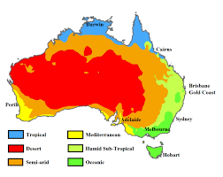
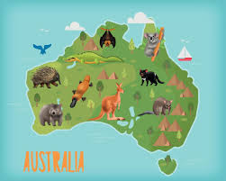

Viaggiare in Australia: ecco cosa ti serve sapere
Articolo creato da Giacomo Cacciamali - 09/09/2023 Malaga (Spain)

L'Australia è un paese affascinante e vasto, con una ricca diversità di paesaggi, cultura e fauna. Prima di pianificare il tuo viaggio down under, è importante conoscere alcune informazioni fondamentali.
1. Richiedi un visto

La maggior parte dei viaggiatori deve ottenere un visto per entrare in Australia. Puoi richiederlo online o attraverso l'ambasciata australiana del tuo paese.
Richiedi qui il tuo visto2. Tempo e clima
L'Australia è nell'emisfero australe, quindi le stagioni sono invertite rispetto all'emisfero settentrionale. Assicurati di conoscere le stagioni e il clima nella regione che intendi visitare.
3. Sanità e sicurezza
L'Australia è nota per la sua fauna unica ma anche per alcune creature potenzialmente pericolose. Informati su come proteggerti da insetti velenosi o animali marini.
scopri come proteggersi da animali e insetti in australiaRicorda, l'Australia è un paese unico e meraviglioso con molto da offrire. Preparati bene e goditi al massimo il tuo viaggio in questa terra incredibile